Centro de Bachillerato Tecnológico Industrial y de Servicios
🏫 Bienvenidos
Bienvenidos al CBTIS 101, un Centro de Bachillerato Tecnológico Industrial y de Servicios comprometido con la formación académica y técnica de sus estudiantes.
El CBTIS 101 es una institución de educación media superior ubicada en Motzoronto Ver. Ofrece formación integral a jóvenes, combinando la educación académica con capacitación técnica en diversas especialidades. Nuestro compromiso es preparar a los estudiantes para enfrentar con éxito los retos del mundo laboral o continuar con estudios superiores.
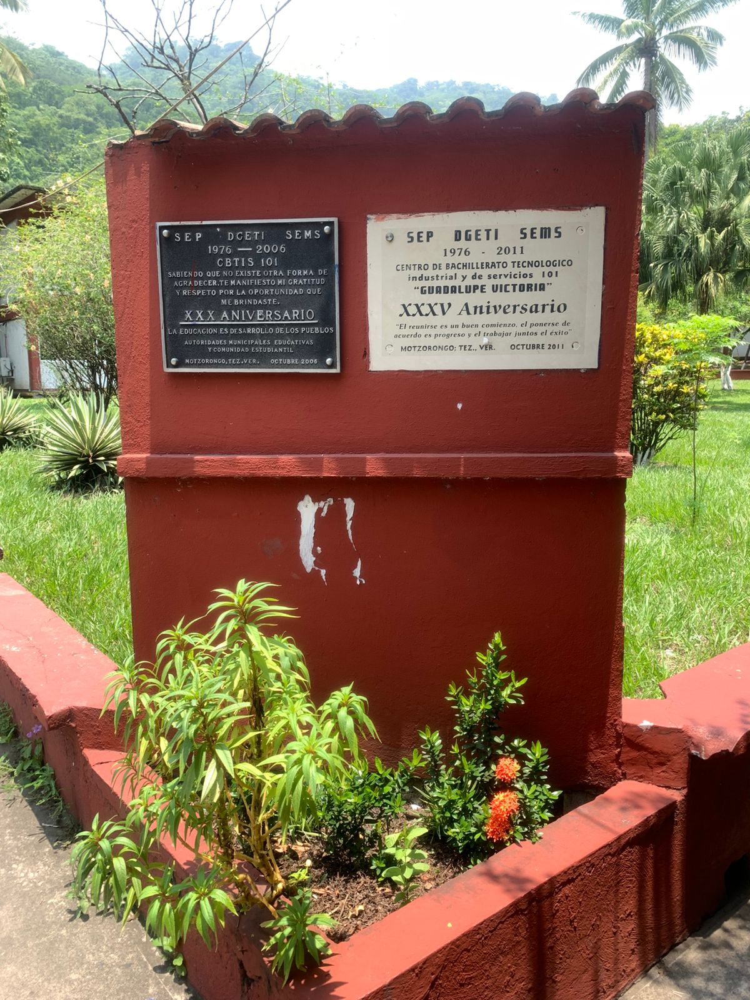
¡Transforma tu vida en el CBTIS 101! Aquí encontrarás el camino hacia un futuro brillante y lleno de oportunidades. Nuestros programas técnicos te darán las herramientas para destacarte en el mundo laboral y alcanzar tus metas. ¡Únete a nuestra comunidad y comienza a construir el éxito que siempre has soñado! En el CBTIS 101, ¡tú puedes ser el protagonista de tu propia historia!
🏢 Nuestras Instalaciones
Conoce los espacios que hacen del CBTIS 101 un lugar ideal para tu formación académica y técnica. Contamos con aulas equipadas, laboratorios modernos, talleres especializados y áreas deportivas para una educación integral.
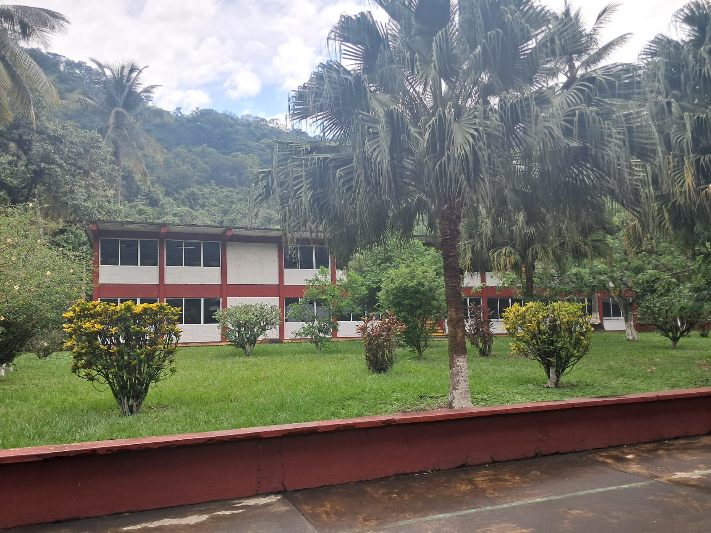
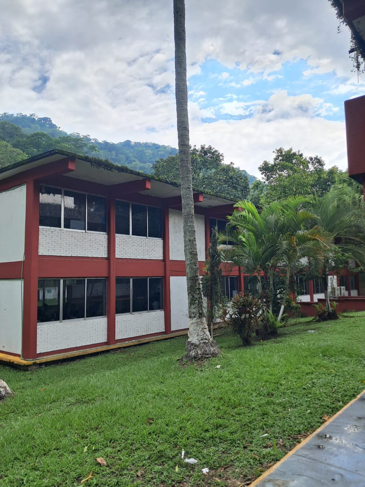
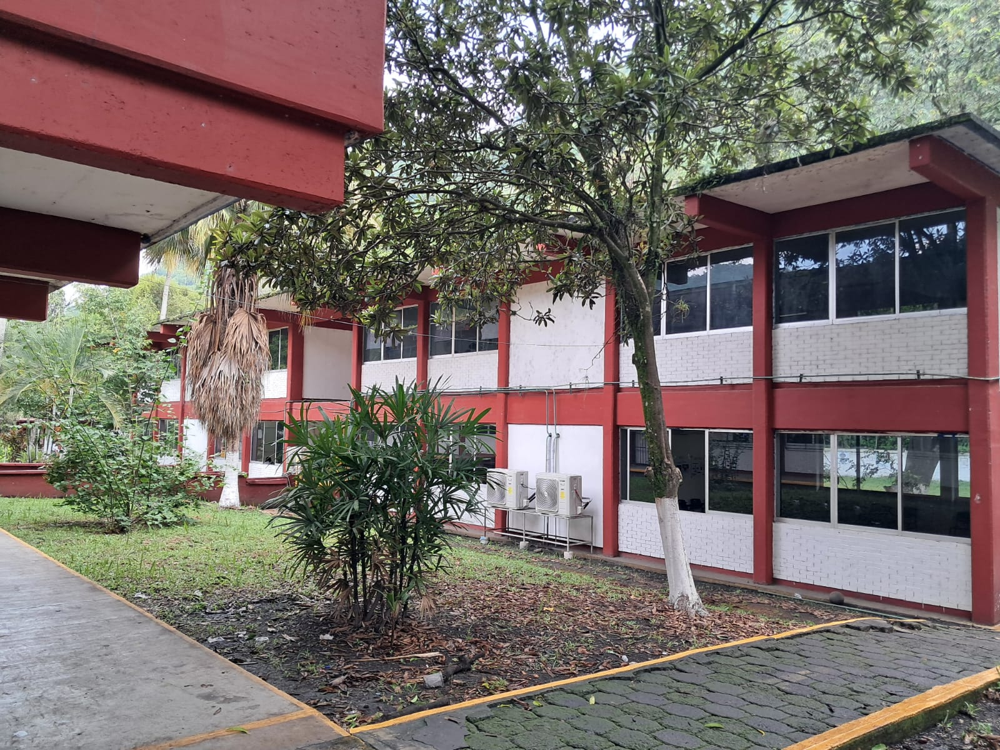
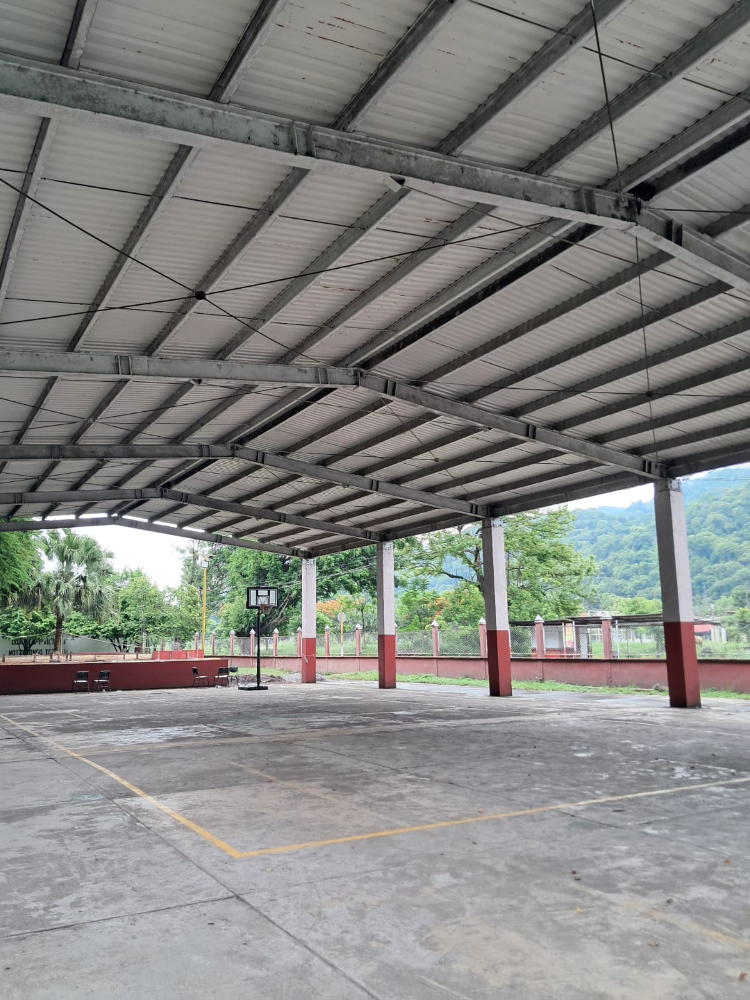
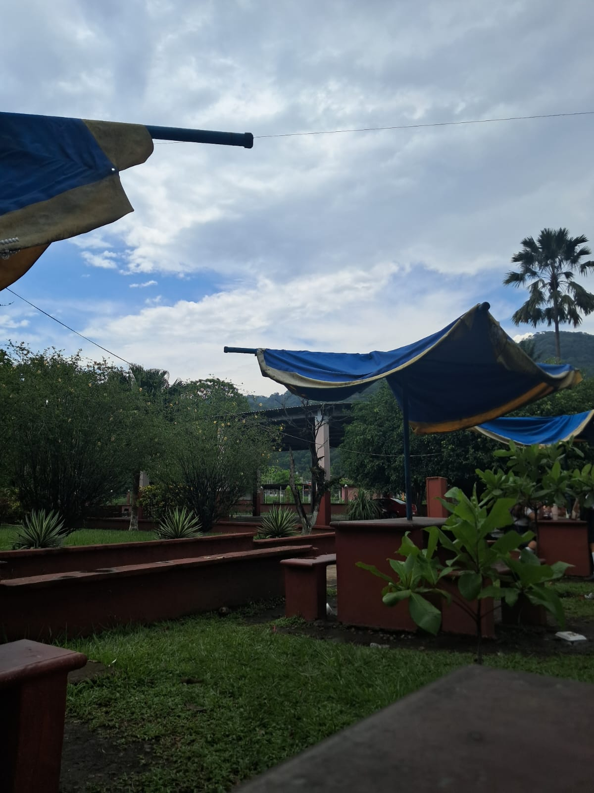
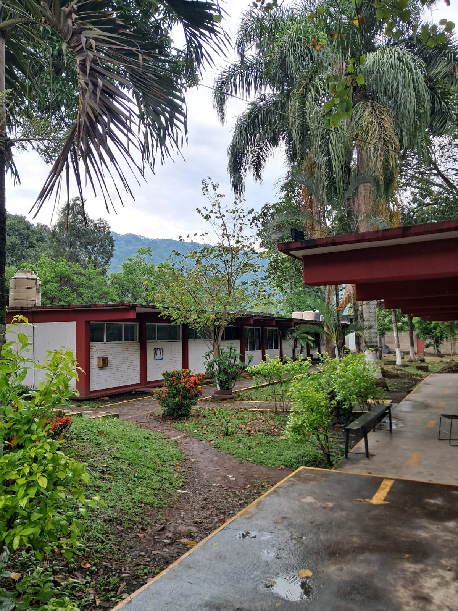
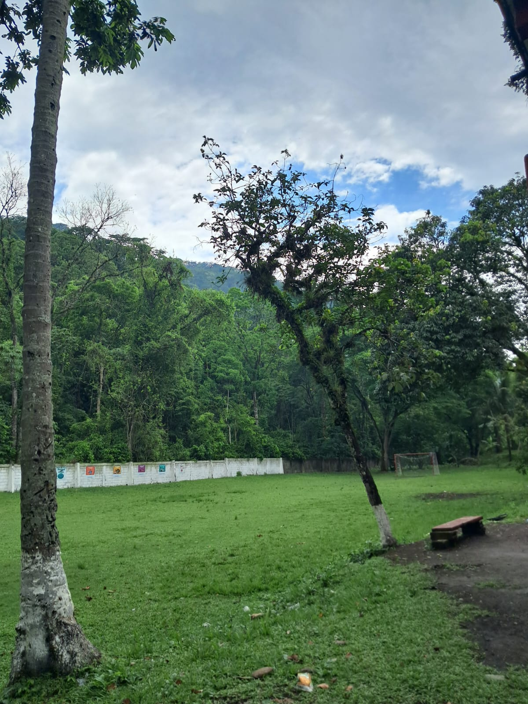
📚 Unidades de Aprendizaje (UAC’s)
Pensamiento matematico
Quimica
Inglés
Lengua Y Comunicación
Ciencias Sociales
Cultura Digital
Humanidades
Recursos Socioemocionales
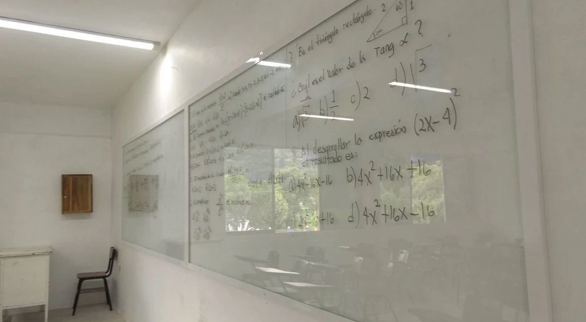
🎓 Carreras Ofertadas
Hax click en la carrera técnica que más llame tu atención para proporcionarte más información:
🧪 Laboratorísta Clínico
🍲 Producción Industrial De Alimentos
📊 Contabilidad
⚙️ Mecánica Industrial
🧪 Laboratorísta Clínico
¿Te interesa la ciencia, la salud y el trabajo de laboratorio? La especialidad de Laboratorista Clínico en el CBTIS 101 es una excelente opción para quienes desean formarse como profesionales técnicos capacitados en el análisis de muestras biológicas.
A lo largo de la carrera, desarrollarás habilidades en la toma y procesamiento de muestras de sangre, orina y otros fluidos corporales. Aprenderás a utilizar equipos especializados como microscopios, centrífugas y espectrofotómetros, además de aplicar técnicas de microbiología, hematología e inmunología, siempre siguiendo estrictas normas de bioseguridad.
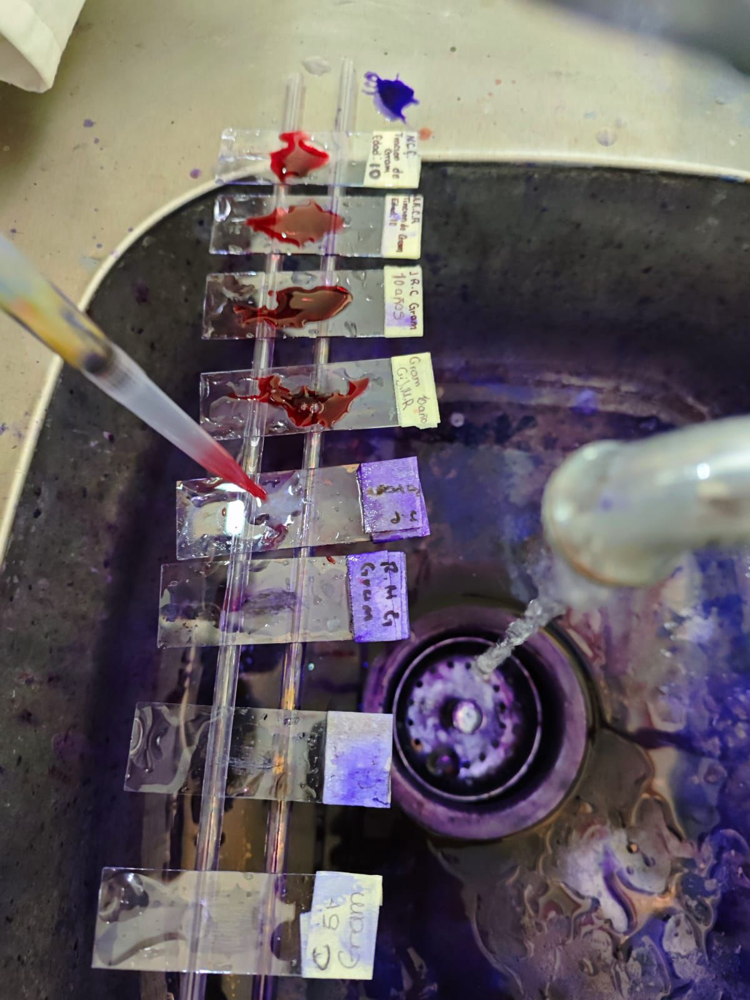
💉 Toma muestras.
🔬 Observa lo invisible.
😷 Y sí, usarás guantes, bata, cubrebocas…
Como egresado o egresada, estarás preparado(a) para trabajar en hospitales, laboratorios clínicos, clínicas, centros de salud y bancos de sangre, aportando información clave para el diagnóstico médico.
Estudia Laboratorista Clínico en el CBTIS 101 y prepárate para una carrera técnica con ciencia, precisión y vocación de servicio.
🍲 Producción Industrial De Alimentos
Si te apasiona la ciencia, los procesos de transformación y la calidad de los alimentos que consumimos, la especialidad técnica de Producción Industrial de Alimentos es ideal para ti.
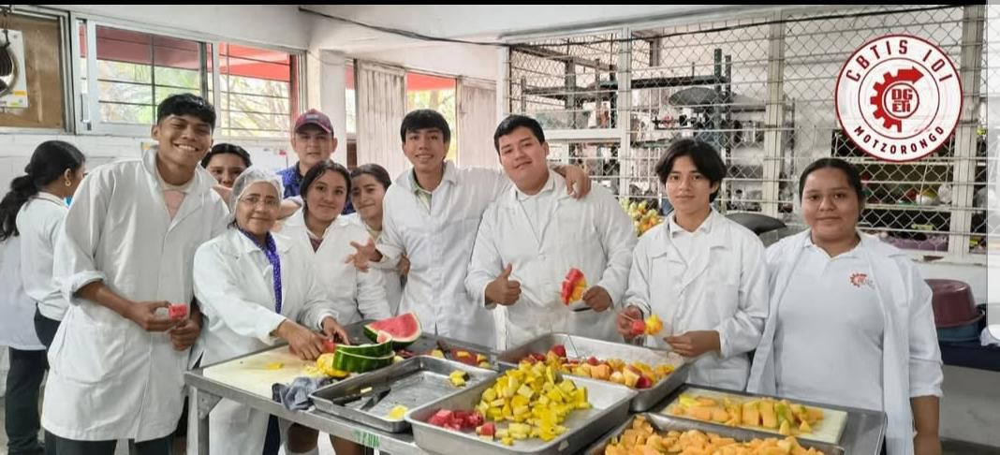
En esta carrera aprenderás a diseñar, controlar y mejorar procesos para la elaboración de productos alimenticios, desde su procesamiento hasta su conservación, envasado y almacenamiento. Se te capacitará en el manejo de maquinaria especializada, normativas de higiene y seguridad, control de calidad, análisis microbiológicos y técnicas de producción en la industria alimentaria.
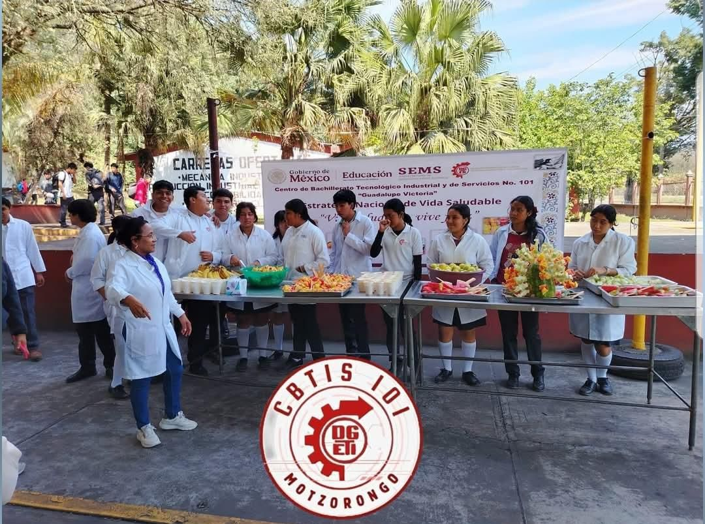
Los egresados de esta especialidad están preparados para trabajar en empresas procesadoras de alimentos, laboratorios de control de calidad, industrias de conservación y transformación, así como emprender sus propios proyectos productivos.
Estudia Producción Industrial de Alimentos en el CBTIS 101 y forma parte del equipo que garantiza alimentos seguros, nutritivos y de calidad para todos.
📊 Contabilidad
¿Te gustan los números, el orden y la administración? La especialidad técnica de Contabilidad en el CBTIS 101 te ofrece una formación sólida y práctica en el manejo financiero de empresas y organizaciones.
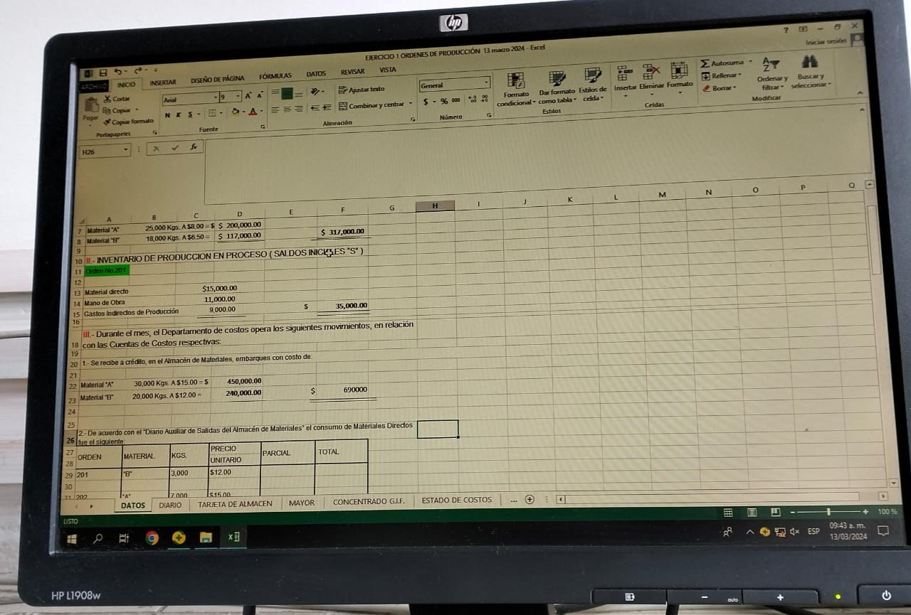
En esta carrera aprenderás a registrar, clasificar e interpretar operaciones contables, elaborar estados financieros, calcular impuestos, controlar inventarios y apoyar en la toma de decisiones económicas. También conocerás las leyes fiscales, el uso de software contable y las herramientas administrativas necesarias para el buen funcionamiento de cualquier negocio.
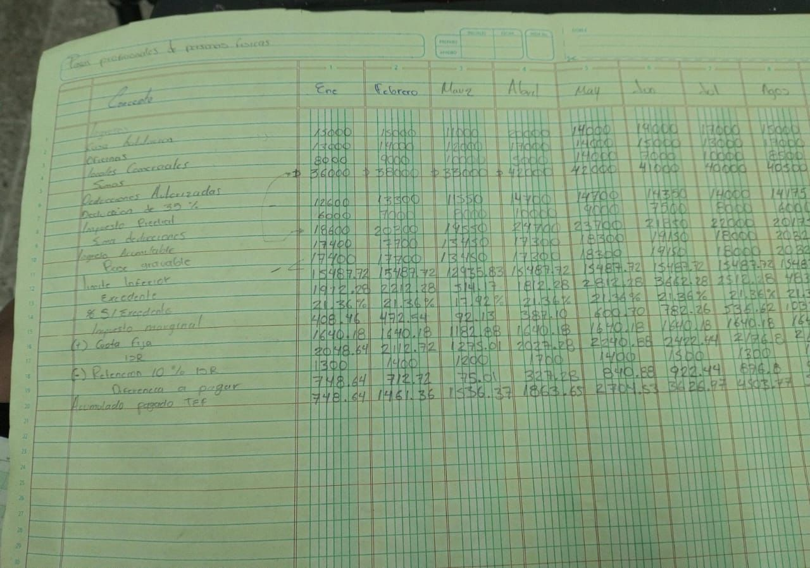
Al egresar, están preparados para incorporarse al sector productivo o continuar estudios superiores en áreas como ingeniería mecánica, mantenimiento industrial y robótica.
Como egresado o egresada podrás trabajar en despachos contables, empresas privadas, instituciones públicas o emprender tu propio servicio de asesoría fiscal y financiera.
Estudia Contabilidad y conviértete en la pieza clave que da orden, control y rumbo a las finanzas del mundo empresarial.
⚙️ Mecánica Industrial
Capacítate en diseño mecánico, mantenimiento de maquinaria, soldadura, CNC y automatización industrial.
¿Te interesa saber cómo funcionan las máquinas, reparar equipos y entender los sistemas que mueven al mundo industrial? La especialidad de Mecánica Industrial en el CEBETIS te prepara para convertirte en un técnico altamente capacitado en el diseño, mantenimiento y operación de maquinaria industrial.
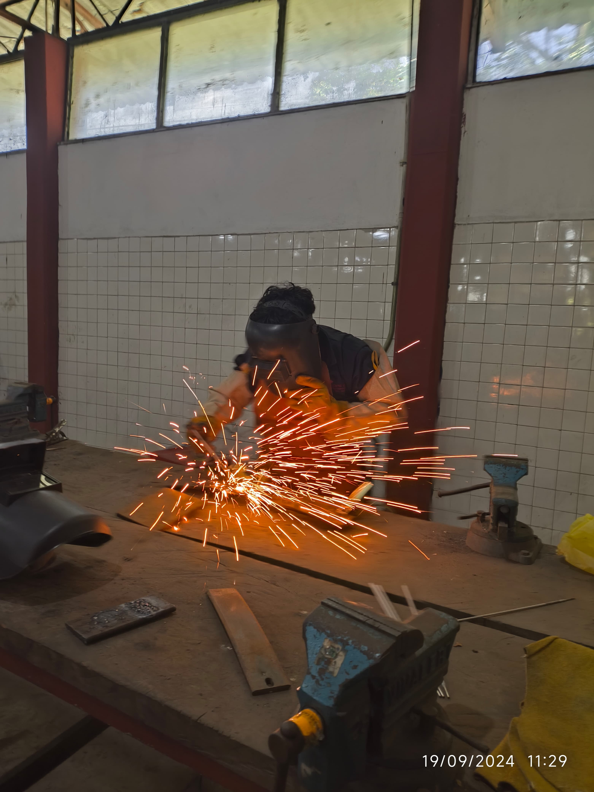
Durante tu formación aprenderás a interpretar planos mecánicos, utilizar herramientas y equipos de precisión, manejar torno, fresadora, soldadura y otros procesos fundamentales para la fabricación y reparación de piezas y sistemas mecánicos. Además, recibirás capacitación en normas de seguridad, control de calidad y prevención de riesgos laborales.
Los egresados de esta especialidad pueden desempeñarse en industrias manufactureras, metalmecánicas, automotrices, mineras, de mantenimiento, así como en talleres o emprendimientos propios.
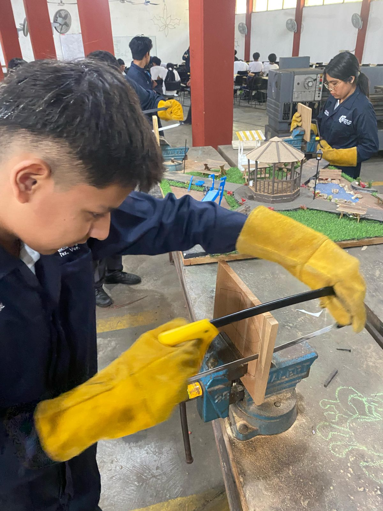
Estudia Mecánica Industrial y conviértete en el especialista que mantiene en marcha la tecnología del presente y del futuro.
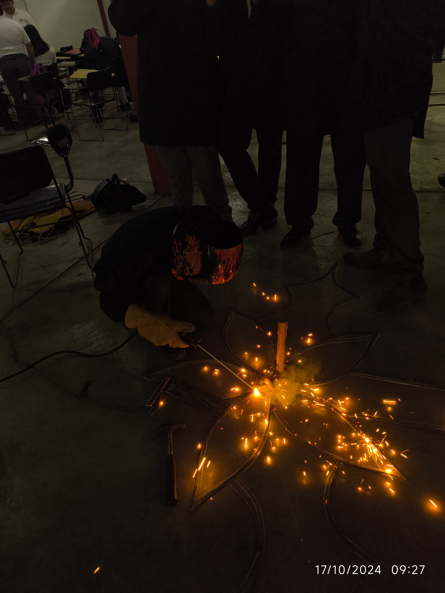
📰 Últimas Noticias
🎉 Semana del Estudiante
En esta semana realizamos actividades culturales, deportivas y recreativas para celebrar el Día del Estudiante.
Empezamos el martes con Día sin Mochila, donde los alumnos podían destacar su creatividad trayendo cualquier cosa en lugar de una mochila.
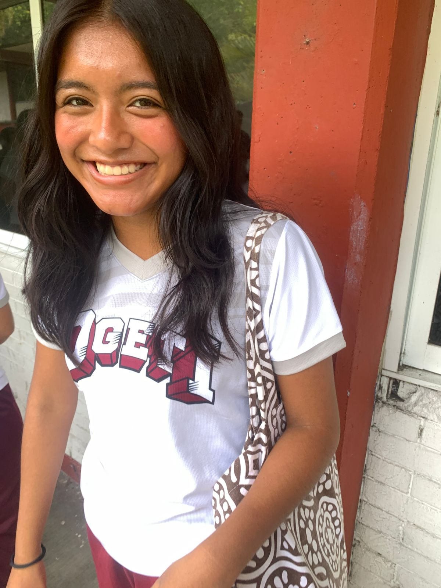
El miércoles fue el Día de Sombreros y Peinados Locos, una jornada divertida donde el alumnado mostró su ingenio con peinados originales y sombreros hechos a mano.
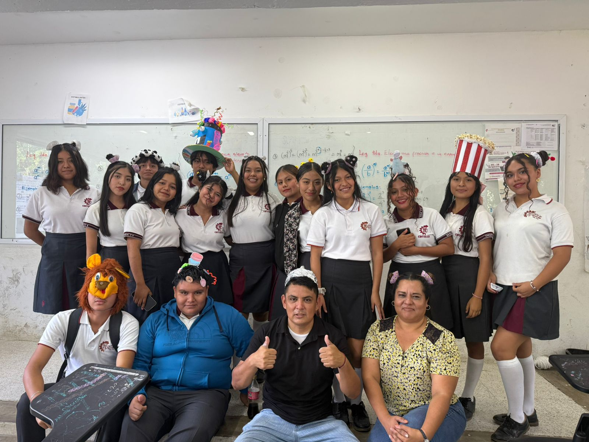
El jueves celebramos el Día en Pijamas, permitiendo a todos asistir en ropa cómoda, descansar y relajarse durante las clases.
Finalmente, el viernes cerramos con broche de oro con un maratón de 5 kilómetros que inició y terminó en el CBTIS en Motzorongo.
También se llevó a cabo la emotiva coronación del Rey y la Reina del Estudiante 2025, y se habilitó un espacio recreativo con juegos inflables y zonas con agua, donde los alumnos pudieron refrescarse y divertirse. 💦
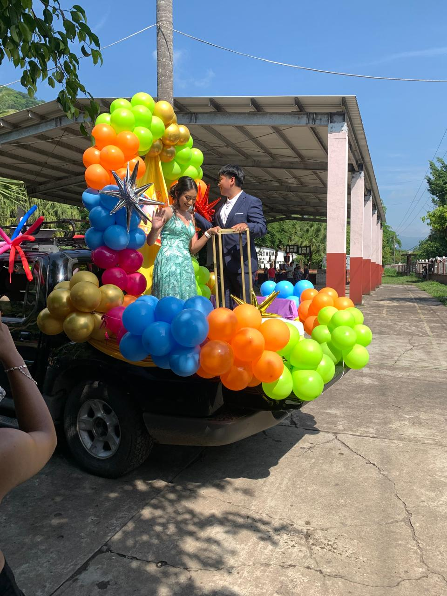
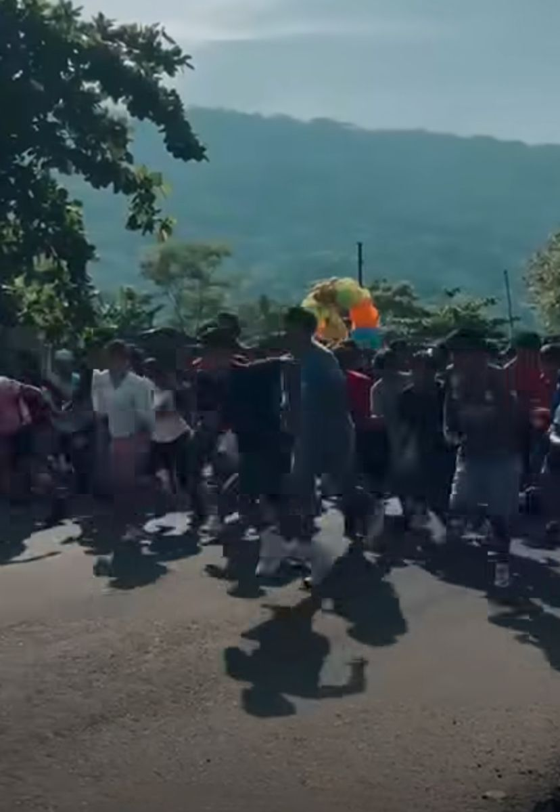
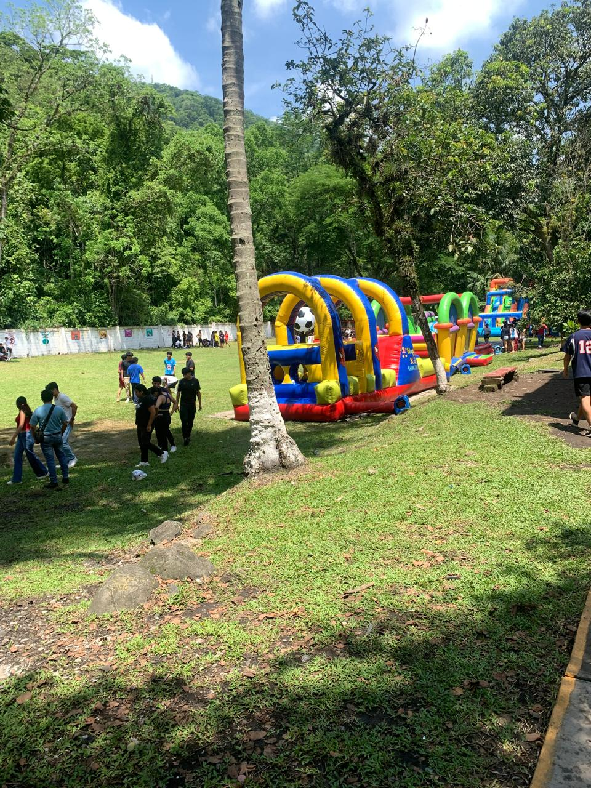
¡Gracias a todas y todos por su entusiasmo y participación!
📝 Examen de Admisión
Recuerda que los exámenes de admisión serán el 23 de junio del presente año.
📚 Fin de Semestre
Estudia para tus exámenes. El semestre está por terminar. ¡Ánimo!
📞 Contacto
Puedes comunicarte con el CBTIS 101 a través de los siguientes medios: